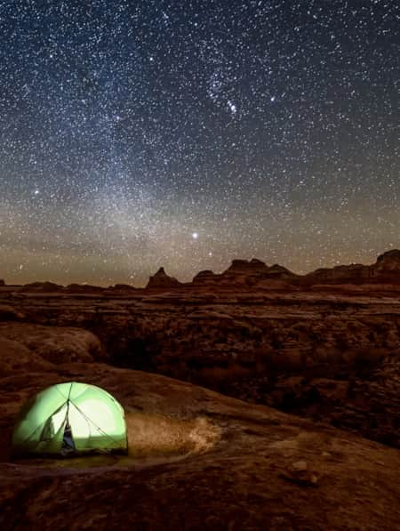
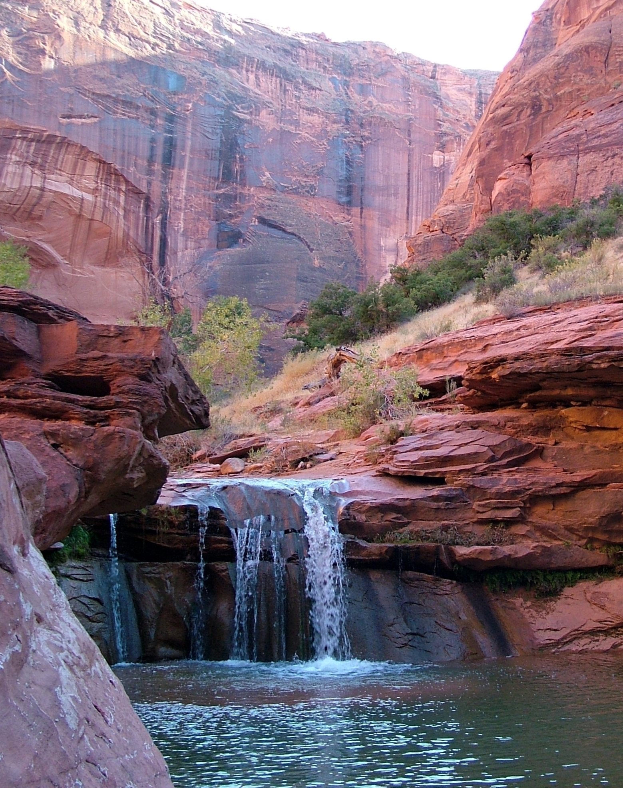

Utah is a great place for camping because of its beautiful mountains, forests, lakes, and deserts! There are many different places to explore, whether you enjoy camping in the mountains or spending the cold winter air under the starlit sky of the desert. Camping is a great way for you to get outdoors, relax, reset and enjoy nature.

Camping is a great way to escape the busy routines of everyday life and just find your zen in the woods. Whether it is sitting around a smoky campfire, exploring new trails, or just enjoying the sunlight and sounds of nature, camping offers the chance we all need from time to time to slow down and reset ourselves. Utah has many beautiful places to do just that and create everlasting memories.

Before heading out on your next or your first camping adventure, check out these helpful resources.